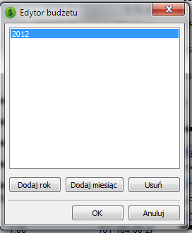
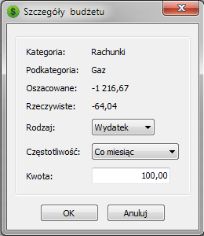
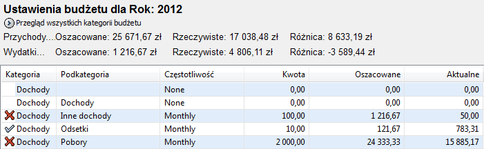

MMEX pozwala na zaplanowanie budżetu na rok lub/i miesiąc.
Pozwoli Ci to na porównanie rzeczywistych przepływów w stosunku do planowanego budżetu.
Budżet może być wyświetlany w latach kalendarzowych lub finansowych.
Użyj okna Opcji do ustawienia rozpoczęcia roku finansowego i innych stałych ustawień według potrzeb.
Opcja Widok->Budżet: jako rok finansowy może być używana do przełączania pomiędzy 2 widokami
Tworzenie nowego budżetu:
Aby utworzyć nowy budżet kliknij PRAWYM klawiszem myszki na gałęzi 'Ustawienie Budżetu' drzewka nawigacji oraz dodaj miesiąc lub rok budżetowy.

Edycja kategorii budżetu:
Po dodaniu roku, wskaż go aby wyświetlić możliwości ustawiania budżetu.
Każda kategoria może być Wówczas edytowana przez podwójne kliknięcie na niej.

Należy tak postąpić z wszystkimi kolejnymi kategoriami.
Ustawienie budżetu:
Jest to podstawa budżetu na zadany rok. Dalsze miesiące i lata mogą być już dodawane w oparciu o ten rok.

Podsumowanie kategorii jest wyświetlane dla każdej głównej kategorii.
Podsumowanie to można wyłączyć przez aktywowanie w Menu opcji:
Wygląd->Ustawienia budżetu: bez podsumowań
Używając raportów w sekcji 'Wykonanie budżetu' możesz porównać czy zaplanowany budżet
jest zgodny z rzeczywistym przepływem pieniędzy.